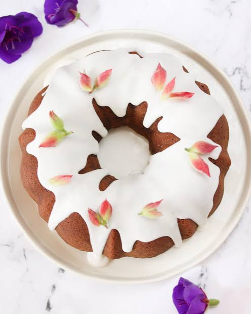

Torta de vainilla

La torta de vainilla es una de las recetas más clásicas de la repostería. Gracias a su sabor suave y a su textura ligera, puede combinarse con frutas, chocolate, crema y una gran variedad de ingredientes. Además, es una excelente base para preparar tortas de cumpleaños y otros postres.